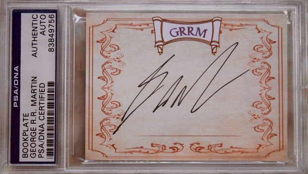
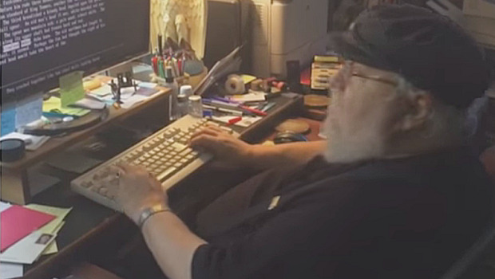
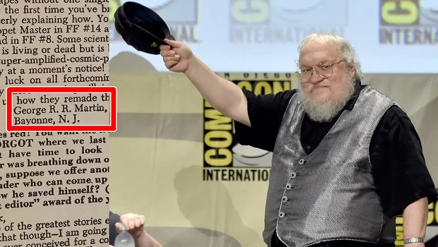
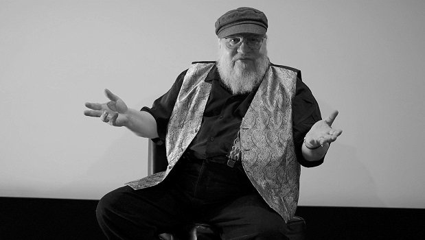
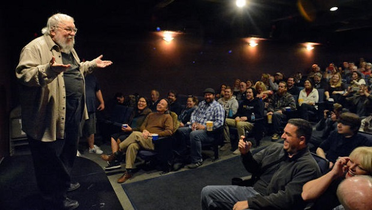
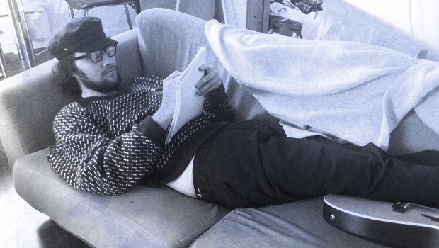
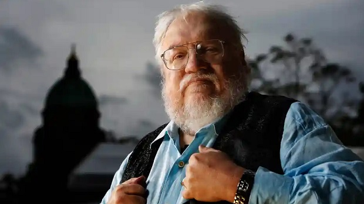

George Martin 1948 yılında Amerika’nın New Jersey eyaletinde dünyaya gelmiştir. Tam adı George Raymond Richard Martin'dir. 1970 yılında Northwestern Üniversitesi gazetecilik bölümünde lisans eğitimi aldı ve aynı bölümde yüksek lisans yaptı. Küçük yaşlardan beri çizgi roman hayranı olan yazar aslında iyi de bir çizgi roman koleksiyoncusu olarak bilinmektedir. Küçük yaşlarda canavar hikâyeleri yazmaya oldukça meraklı olan yazarın 1971 yılında 21 yaşında iken Galaxy dergisinin şubat sayısında askeri bilim kurgu konusunda kısa öyküsü yayımlanarak okurları ile buluşturulmuştur.
1980 yılından itibaren ise televizyonlar için yazmaya başladı ve kitap editörlüğü yaptığı bilinmektedir.1986 yılında CBS Television da Twilight Zone için hikâye editörü oldu. Güzel ve Çirkin (1988) ve Doorways (1994) projelerinin yapımcılığını üstlendi.1996 yılında Buz ve Ateşin şarkısı roman serisinin ilk kitabı olan Game Of Thrones ‘Taht Oyunları’ kitabını yayınladı. Yayınlanan bu kitap serisi ile adını duyurdu. Yazar korku üzerine çalışmalarda bulunduğuysa da bilim kurgu alanında da pek çok öyküyü kaleme almıştır.
George R. R. Martin, ismini Buz ve Ateşin Şarkısı ile ölümsüzleştirdi. Bu seri ve seriden uyarlanan televizyon dizisi milyonlarca insanın ilgisini cezbetti, sunduğu karanlık ve kanlı dünya hepimizin hayal gücünü sarstı. İyi ile kötünün çiğ savaşına karşı öne sürülen gri kahramanlar arasında, GRRM’nin kaleminden çıkan hem lekelenmiş hem de onurlu karakterler en ön saflarda duruyordu.
Dünya çapında yüz binlerce hayran serinin devam kitaplarını bekliyor, internette seriyle alakalı akademik makalelerdeki ciddiyeti aratmayacak türden teoriler dolaşıyor. Ancak GRRM yazdığı eserlerden ibaret değil. Bütün o serinin arkasındaki adamın şahsına münhasır bazı ilginç özellikleri var. İşte bu yazıda, onları listelemeye çalıştık.
Çift R

J.R.R Tolkien ve George R.R. Martin’in yazım tarzları ve işledikleri temalar birbirinden epeyce farklı olsa da, isimleri tuhaf bir benzerliğe sahip: R.R. Kimileri bunun bir tesadüften öte olduğunu düşünüyor, ancak George R.R. Martin aslında 13 yaşına kadar sadece George Raymond Martin’di. 13 yaşında aldığı vaftiz ismi Richard sayesinde isminde iki R’ye sahip oldu.
WordStar 4.0

George R.R. Martin yazılarını hâlâ DOS işletim sistemine sahip oldukça eski bir bilgisayarda yazıyor. Kelime işlemcisi olarak da WordStar 4.0’ı kullanıyor. Modern teknolojinin sunduğu otomatik düzeltme seçeneğinden de nefret ediyor. “Eğer bir kelimeyi büyük harfle yazmak istiyorsam öyle yazarım,” diyor. Yani shift tuşuna basmayı herkes bilir, bunun için teknolojiye gerek yok. Üstelik WordStar, sunduğu bütün o sade ve etkili hizmetlle zamanının en başarılı programlarındandı.
Çizgi Romanlar ve Fanzinler

George Martin bir çizgi roman hayranıydı ve çizgi romanlar belki de kariyerine profesyonel olarak adım atmasına sebep olmuştu. Sevdiği çizgi romanlara mektuplar yazıyor, bu mektuplar da George Martin’in açık adresiyle çizgi romanların yeni sayılarında basılıyordu. Bu sayede kendisi gibi birçok çizgi roman hayranı GRRM’ye fanzinlerini gönderip, ondan hikâye yazmalarını istedi. Genç George, önüne gelen çizgi roman fanzinlerine bakınca o kadar vasat hikâyelerle karşılaşmış ki, “Ben bunlardan kat be kat daha iyi yazarım,” diye düşünmüştü. Nitekim kendisinin kazandığı ilk ödüllerden biri yazdığı çizgi roman hayran kurgusu sayesindeydi.
Hayran Kurgusu

Hayran kurgusu demişken, George Martin hayran kurgularını hiç tasvip etmiyor. Kendisi bir zamanlar hayran kurgusu dalında kalem oynatmış olmasına rağmen özellikle genç yazarlara ve yazmaya yeni başlayanlara hayran kurguları yazmaktan kaçınmalarını öğütlüyor. GRRM’ye göre hayran kurguları yazmak bir noktada yeteneği köreltiyor. Çünkü zaten hâlihazırda mevcut olan karakterler, kurgular ya da kurgusal dünyaları kullandığınız için kendi yaratıcılığınızı ortaya çıkaramıyorsunuz.
Jean Cocteau Sinema Salonu

GRRM, toplulukla birlikte film seyretmeyi seviyor olmalı ki evine büyükçe bir sinema salonu kurmak yerine yaşadığı şehir Santa Fe’deki Jean Cocteau Sineması‘nı satın alıp restore ettirdi. Bu sinema salonu şimdilerde illüzyon gösterilerinden tutun imza günlerine kadar pek çok etkinliğe ev sahipliği yapıyor. George Martin bir söyleşide sinema salonu hakkında konuştu ve sinemada seyrettiği bir film boyunca seyircinin verdiği tepkilerden ne kadar hoşlandığını anlattı.
Yazı Hayatından Küçük Kesitler

George R.R. Martin yazmaya çok küçük yaşlarda başladı, üstelik yazdığı hikâyeleri arkadaşlarına satıyordu. Fakat GRRM’nin kariyerindeki bu dönem, arkadaşları korkunç kâbuslar görüp George’u ailelerine şikâyet edince sona erdi. GRRM’nin yazarlığıyla alakalı diğer bir ilginç bilgi ise gazetecilik bölümü sayesinde gereksiz yere bol bol sıfat kullanmayı terk etmiş olması. GRRM televizyon sektörü sayesinde de önemli bir özellik kazandı. Bu özellik oldukça ikonik ve etkileyici olan POV sistemi; yani her bölümün bir karakterin gözünden yazılmış olması. Bu sistem sayesinde televizyonculukta sık sık kullanılan cliffhanger (arkası yarın) tekniğini başarılı bir şekilde Buz ve Ateşin Şarkısı’na uyarladı.
Kale

George R.R. Martin, yaşadığı şehirde kale şeklinde bir kütüphane inşa etmeye kalkınca komşularının tepkisini çekti. Böylesi bir yapı yüzünden Santa Fe’nin özgün mimarisi bozulabilirdi ve buna izin verilmesi hâlinde kendine kale inşa etmek isteyen birçok zengin şehri koca bir şantiyeye dönüştürebilirdi. Üstelik Santa Fe, inşa edilmesi planlanan söz konusu kale nedeniyle malum serinin hayranları tarafından istilaya da uğrayabilirdi.